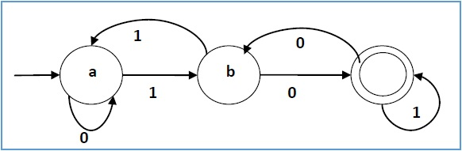
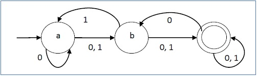

Theory of Computation
Home
Finite Automata
A finite automaton (FA) is a simple idealized machine used to recognize patterns within input taken from some character set (or alphabet) C. The job of an FA is to accept or reject an input depending on whether the pattern defined by the FA occurs in the input.
Finite automata consist of :
- A finite set S of N states
- A special start state
- A set of final (or accepting) states
- A set of transitions T from one state to another, labeled with chars in C
Two Types
- Deterministic Finite Automata
- Nondeterministic Finite Automata
-
Deterministic Finite Automata

-
Nondeterministic Finite Automata
